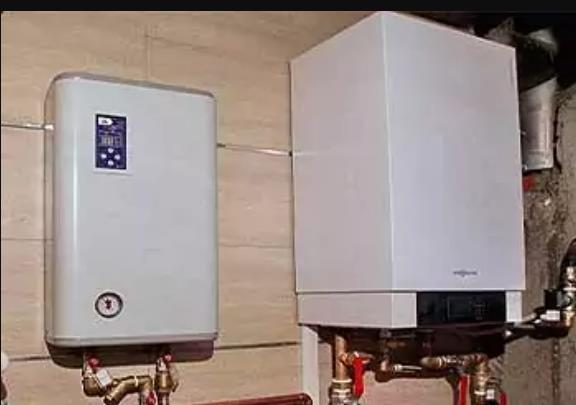
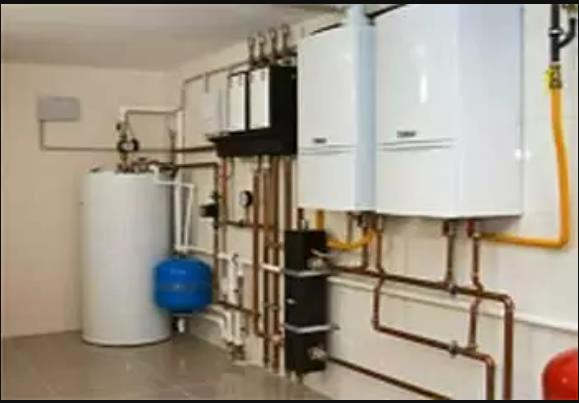
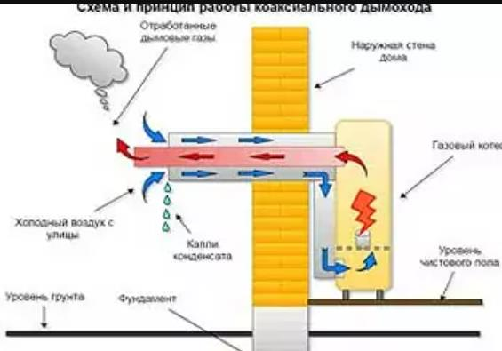
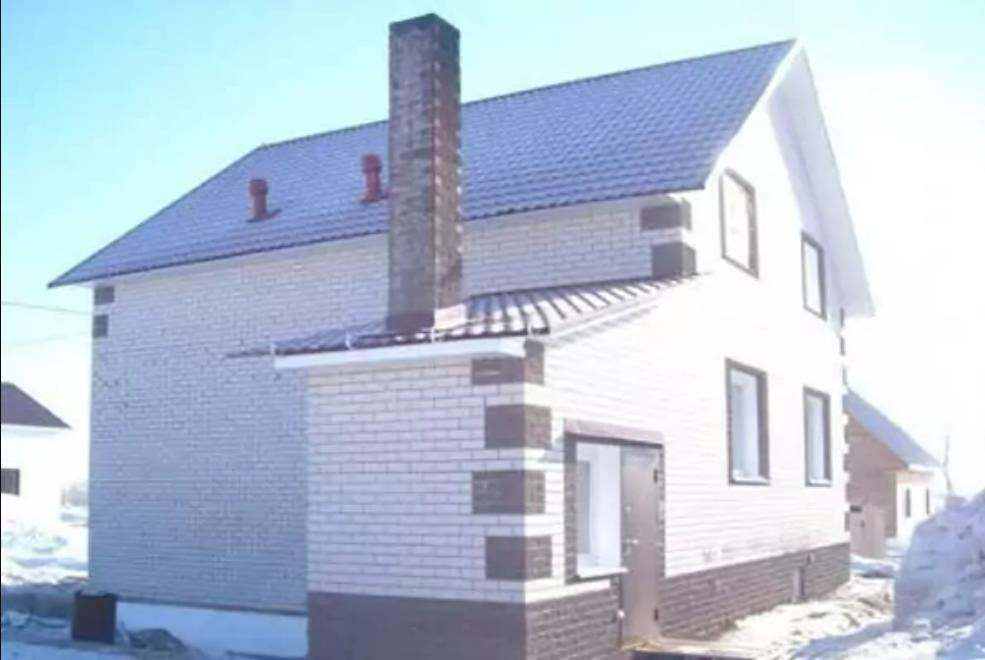
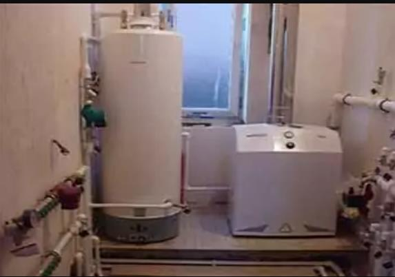
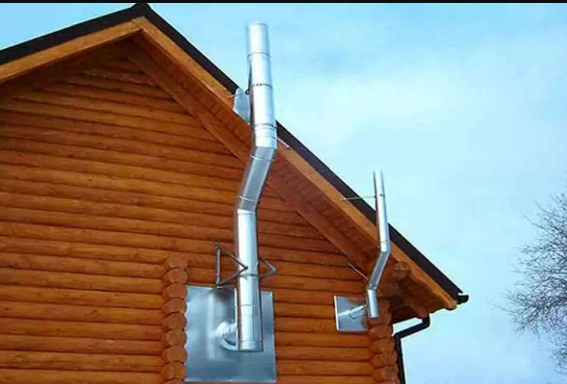
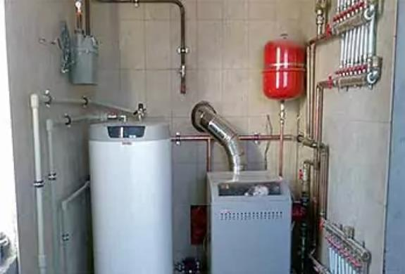

Газовый котел без котельной
В домах сравнительно большой площади, ориентировочно от 180 м, котлом малой мощности не обойтись, и под котельную неизбежно выделяется отдельное помещение.
Но большинству небольших домов достаточно мощности газового оборудования до 35 кВт. Его допускается разместить на кухне. Для этого лишь нужно выполнить обязательные условия:
- Кухня должна быть отдельной – изолированной дверью от других жилых помещений. В ней обязательно окно с форточкой.
- Котёл крепится на стену или её отделку из негорючих материалов.
- Оборудуется специальный дымоход.
- Высота кухонного потолка – от 2.4 м, минимальное расстояние от верха котла до потолка 0.8 м.
Следует понимать, что установка котла на кухне – это лишь возможность сэкономить площадь дома, материалы для устройства отдельного помещения.
Выгоды отдельной котельной для газового оборудования любой мощности
Очевидно, что в массе случаев можно обойтись без котельной. Однако наблюдается немало рекомендаций, что всё же желательно выделить, либо пристроить отдельное помещение. Причины:
- Безопасность – полностью исключается возможность угореть, пострадать от возгорания.
- Звукоизоляция – большинство газовых котлов запускаются с шумным хлопком, а в отельном помещении его работа не будет слышна.
- Компактное размещение вспомогательного оборудования: циркуляционного насоса, расширительного бака и проч.
Всё это немаловажные аргументы в пользу оборудования под котельную отдельного помещения. Кроме того, автоматически решается проблема размещения насосной станции, её гидроаккумулятора, оборудования для горячего водоснабжения, что особенно актуально для накопительных систем.
Требования к отдельной котельной для газового оборудования
Если мощность котла более 60, но менее 150 кВт, то его допускается разместить внутри дома в отдельном помещении любого этажа. А котлам мощностью 150-350 кВт уже требуется установка в отдельное помещение первого или цокольного этажа, в пристрое, либо отдельно стоящей постройке.
При размещении котельной в цокольном этаже или в подвале, требования ужесточаются:
- на каждый киловатт мощности к обязательному объёму 15 м³ ещё добавляется 0.2 м³;
- стены возводятся из паро-газо-непроницаемых материалов;
- оборудуется отдельный выход на улицу, либо в коридор, ведущий за пределы дома.
Для котельной внутри дома требуются двери из огнеупорного материала, способного сдерживать горение не менее 15 мин. Этим условиям удовлетворяют стальные двери самодельного или заводского изготовления.
Важно, что в расчёты помещения котельной берётся не площадь, а именно объём помещения, который зависит от мощности размещаемого котла: до 30 кВт – не менее 7.5 м³; от 30 до 60 кВт – не меньше 13.5 м³; от 60 до 200 кВт – не менее 15 м³.
Общие требования к помещениям для размещения отопительных приборов:
- Высота 2,2 метра – при мощности менее 30 кВт. При большей мощности – не меньше 2,4 м.
- Открывающееся наружу окно с форточкой или фрамугой. Площадь остекления не менее 0.03 м² на 1 м³.
- Электроосвещение.
- Вентиляция, способная производить троекратный обмен воздуха в час.
- Дымоход, соответствующий выходному отверстию в котле отопления.
Котлы до 30 кВт можно снабжать проходящим сквозь стену коаксиальным дымоходом.
Пристроенные к дому котельные
К ним справедливы все предыдущие требования, и добавляются новые:
- Котельная пристраивается к сплошному участку стены – минимальное расстояние до ближайших окон и дверей 1 м.
- Она не связана с домом – все её 4 стены возводятся на отдельный фундамент.
- В постройку берутся только негорючие материалы, например: кирпич, газоблок.
Отдельно стоящая котельная
Для отдельных котельных к перечисленным параметрам добавляются новые требования:
- Оборудуется легко открываемыми выходящими на улицу дверьми – слабозакрепленными, без какого-либо дополнительного усиления. Такая мера безопасности рассчитана на самый крайний случай – минимизировать разрушение котельной и отвести силу взрывной волны на улицу.
- Котел ставится на отдельный фундамент, высотой не более 15см от пола.
- Если вес котла менее 200 кг, его допускается устанавливать на бетонный пол.
- Присутствует датчик аварийного отключения газа.
Требования к монтажу дымоходов
Правила устройства дымовой трубы:
- Сечение дымохода – не менее выходного отверстия из котла.
- Число отводов трубы 90° – не более трёх.
- Длина лежанки – не больше 3м.
- Вертикальный канал внутри дома проходит сквозь перекрытия, снаружи – крепится по стене.
- Чтоб обойти свес крыши допускается использовать 2 отвода по 30°.
- Трубу запрещено накрывать зонтом, она должна быть достаточной высоты, чтобы тягу не подпирало ветром.
- При строительстве нового дома каждому котлу, водонагревателю проектируется отдельный дымоход. При переоборудовании готового дома в дымоход допускается подключение 2-х котлов – с разницей высоты 75 см.
Для прокладки дымохода сквозь деревянные стены и перекрытия необходим проём обеспечивающий зазор 0.5 м. Для изолированной трубы типа сэндвич допустимый зазор 0.38 м.
Противопожарный зазор от любых деревянных конструкций – 0.5 м. От дерева под несгораемой отделкой – допустимый зазор 0.25 м.
Итоги
В большинстве случаев требуется устройство котельной по стандартам, обоснованным практикой эксплуатации жилья. Они разработаны для безопасности людей и имущества от возможных последствий неисправности газового оборудования.
Рационально ли тратить полезную площадь дома для помещения под котельную в необязательных случаях – решать вам. Важно взвесить все возможные факторы и риски: скопление людей, доступ к оборудованию, надёжность системы безопасности.
Приглашаем Вас посетить каталог готовых проектов домов с котельной